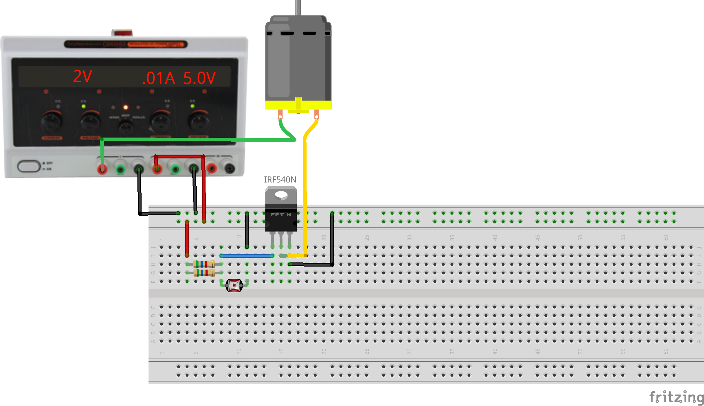
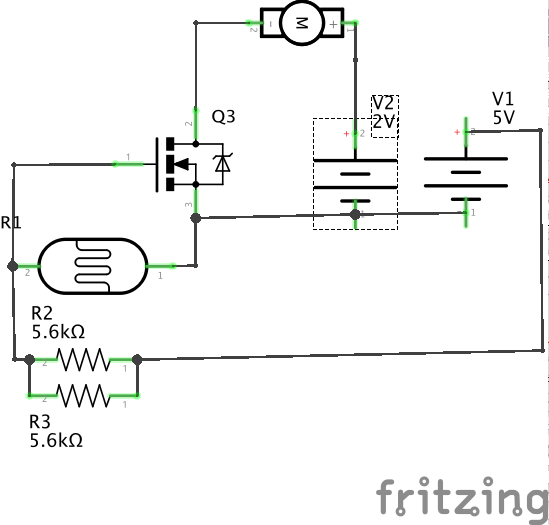

Connect light to motion via electricity.
This exercise uses a single-input single-output system which couples a light level to a motor activation. A photoresistor modulates the base current of a bipolar transistor, controlling the current flowing through the collector and emitter to operate a motor. This represents one possible minimal solution to the first graded assignment.
This is an analog circuit inasmuch as the photoresistor current can be set to keep the transistor operating in a linear range, continuously varying the motor speed. If the base current is high or low enough, the transistor will either saturate or shutoff and act as a digital device in that it will simply be ON or OFF.
This circuit takes advantage of the voltage resistor from an earlier lesson. The photoresistor is in series with a bias resistor. As the resistance of the photoresistor changes, the voltage of the transistor's ground pin relative to the source pin (tied to ground) changes. This changes the amount of current that is allowed to pass through the transistor, which in turn limits the speed of the motor.
The two 5.6k resistors in parallel are used to create an equivalent reistance of 2.8k. As mentioned in the photoresistor with bias resistor exercise, different bias reisitor values allow for different sensivity ranges for the photoresistor. Here the resistor value was found through trial and error in order to create a voltage divider where the transistor is off when the photoresistor is uncovered, and on when it is covered. If your circuit is not working, try changing the bias resistor value (lower values will be more sensitive).
This circuit is a very simple example of a class-A amplifier using a common-emitter topology; there are many other types of amplifying transistor circuits. In general we will use PWM to control motor speed using a simple type of class-D amplifier for better power efficiency.
 